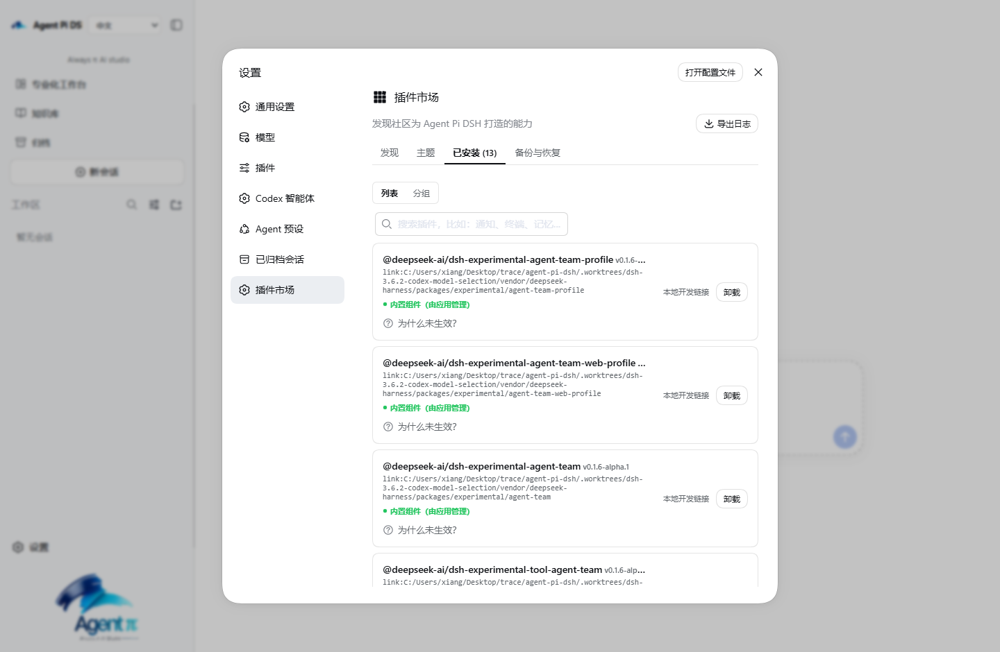

通用办公助手陪你聊天，Agent Pi DSH 替你干活：吃透投标、实施、投资的垂直作业系统。长程任务不断档、目标不偏离、证据可追溯——数十份标书文件一次搞定，数千条 BOQ 逐项推导，成果直接落盘为正式文档。 Generic assistants chat. Agent Pi DSH does the job — a vertical workbench for tendering, delivery and investment. Long-horizon runs that never drift, evidence at every step: dozens of tender files in one run, thousands of BOQ items derived line by line, deliverables written to disk as official documents.
市面上流行把知识库堆在 RAG（向量检索）上。Agent Pi DSH 做了两个反向取舍，再加一次果断的换芯——所有决定都围绕一个问题：普通工程企业的普通电脑，能不能把最难的投标任务跑到底。
The mainstream answer is to pile the knowledge base onto RAG (vector retrieval). Agent Pi DSH made two deliberate counter-choices and one decisive engine swap — all around a single question: can an ordinary office PC finish the hardest tender job end to end.
一套像样的 RAG 要嵌入模型、向量数据库、GPU 显存和 Docker 编排——对普通用户太重、用不起；而且向量检索本质是「相似度猜测」，检索到 ≠ 证据对，在高证据化的投标场景里，错一条引用就是废标风险。本应用改走另一条路：按文档自身章 / 节 / 条切分条款，MiniSearch BM25 检索——零重型依赖，普通办公电脑即可运行，每条命中都精确定位到 Clause，出处可当场打开核对。
A serious RAG stack means embedding models, a vector database, GPU memory and Docker orchestration — too heavy for ordinary users. And vector search is fundamentally a similarity guess: retrieved ≠ evidenced. In high-evidence tendering, one wrong citation can void a bid. We chose another path: clauses split by each document's own chapters / sections / clauses, retrieved with MiniSearch BM25 — zero heavy dependencies, runs on any office PC, and every hit locates the exact clause for on-the-spot verification.
DeepSeek V4 全系支持 1M tokens 上下文（约 800 页 PDF）——整套标书文件、规范条款、数千条 BOQ 和全部中间稿可以全程驻留上下文。模型不需要靠检索「猜」该看什么，而是在完整事实面前工作：任务始终围绕目标推进，不因截断而偏离。公开评测也印证了这条路线：在文档级理解上，长上下文方案已优于传统 RAG。
Every DeepSeek V4 model supports a 1M-token context (≈800 pages of PDF) — the full tender set, specs, thousands of BOQ lines and all intermediate drafts stay in context for the whole run. The model never has to "guess" what to look at; it works in front of complete facts, so the job stays on goal instead of drifting after truncation. Public benchmarks back this route: for document-level understanding, long-context now beats classic RAG.
经过实测：全程跑下来最难的 BOQ 逐条分析，DeepSeek Harness 架构的运行效果明显优于 Claude Agent SDK + Pi 双架构——内核原生并行工人拆活、持久 Bash 不再卡三秒、长任务崩溃只救未完工部分。所以 3.0 果断换芯：同样的投标任务，回合更短、token 更省、目标更稳。这不是界面改版，是发动机整机更换。
Verified in practice: on the hardest part of the whole run — line-by-line BOQ analysis — the DeepSeek Harness architecture clearly outperforms the Claude Agent SDK + Pi dual stack. Native parallel workers, persistent Bash without multi-second stalls, crash recovery that rescues only unfinished work. So 3.0 swapped the engine decisively: the same tender job finishes in fewer turns, with fewer tokens and a steadier goal. Not a reskin — a full engine replacement.
豆包、通义办公、WorkBuddy 这类通用助手面向所有人的日常事务；Agent Pi DSH 只为工程企业的重活而生——从底层就不是一类产品。
General assistants like Doubao, Tongyi or WorkBuddy serve everyone's daily chores. Agent Pi DSH is built only for the heavy jobs of engineering enterprises — a different category from the ground up.
| 维度 | Dimension | 通用办公助手（豆包 · 通义 · WorkBuddy） | Generic assistants (Doubao · Tongyi · WorkBuddy) | Agent Pi DSH | |
|---|---|---|---|---|---|
| 任务尺度 | Task scale | 几十轮对话就断片、跑题 | Loses the thread after a few dozen turns | 小时级长程任务一次跑完；崩溃只救未完工的部分，不做无用功 | Hour-long jobs finished in one run; crashes rescue only undelivered work |
| 目标控制 | Goal control | 聊到哪算哪，越聊越偏 | Drifts wherever the chat goes | 阶段门禁 + 成果树锁定目标，任务不偏离 | Stage gates and an output tree lock the goal — no drift |
| 事实可靠性 | Reliability | 凭模型记忆编，幻觉频发 | Fills gaps from model memory — hallucinations | 证据门禁：查不到出处就不放行，基本杜绝幻觉 | Evidence gates: no source, no pass — hallucinations fenced out |
| 专业深度 | Depth | 通用模板，不懂行业 | Generic templates, no industry knowledge | 投标 / 实施 / 投资垂直技能；规范、FIDIC 条款进知识库逐条调用 | Vertical skills for tender / delivery / investment; specs and FIDIC clauses in the knowledge base |
| 数据处理 | Data volume | 长文档读不动，大表格丢行漏项 | Chokes on long documents, drops rows in big tables | 数千条 BOQ 逐项处理，每一项都带规范出处 | Thousands of BOQ items processed line by line, each with its spec citation |
| 成果形态 | Deliverable | 一段聊天记录，复制粘贴再排版 | A chat transcript you reformat by hand | 落盘的正式成果：漂亮版式、带公式报表、出处芯片，中标后直接服务实施 | Official outputs on disk — polished layout, formula-carrying workbooks, citation chips; reusable into delivery after award |
以投标模块为例，看什么叫垂直深度：中间材料全程不丢，每一步都可核对出处。
Take the tender module: this is what vertical depth means — every intermediate kept, every step checkable against its source.
一次任务读完所有标书文件。规范、FIDIC 条款进入本地知识库，与标书特别条款的修订逐条对照、全部总结进去——过程材料全程不丢，产出详细的分析文档。
One run reads every tender file. Specs and FIDIC clauses enter the local knowledge base, reconciled line by line against the particular conditions — nothing is lost along the way, and the analysis lands as detailed documents.
庞大的 BOQ 清单逐条引用规范、标书特别条款、FIDIC 修订，为每一个条目界定工作范围——不靠印象，每条都有出处芯片。
Every BOQ line cites the specs, particular conditions and FIDIC amendments to define its scope of work — no impressions, every item carries a citation chip.
依据工作范围，结合你的企业数据，与网络验证的工法、工效、资源实时实地价格，对每条 BOQ 做详尽的五步推导。
From the defined scope, combining your company data with web-verified methods, productivity and live local resource prices, every BOQ item goes through a detailed five-step derivation.
所有推导汇总成资源清单与成本推定，带公式的 BOQ 组价测算表可以直接改——这是施工组织策划可验证的最坚实基础。
All derivations roll up into resource schedules and cost estimates, with a formula-carrying pricing workbook you can edit directly — the most solid, verifiable foundation for construction planning.
根据标书文件对项目特征进行施工推演，建立起一整套可执行的施工策划稿，不是空话套话。
The works are simulated against the project characteristics in the tender documents, producing an executable construction plan — no boilerplate.
依照企业常用投标格式与内容深度模板编制投标文档——用户模板复刻版式、大纲与深度，项目事实永远来自本项目资料。
The bid document follows your usual format and depth templates — layout, outline and depth mirrored from your own documents, while project facts always come from this project's files.
对企业生产力的解放：同样的标一旦中标，投标阶段的全部详尽基础资料直接服务实施阶段——成本策划有据可依，落地即有据可查。 A productivity unlock: when the bid wins, the entire detailed foundation flows straight into the delivery phase — cost planning with evidence behind every number.
工作台是加速器，不是闸门：默认路径仍是选工作区、直接说任务。复杂活由内核原生拆给并行工人，证据与成果全程可追溯。
The workbench accelerates, it does not gate: pick a workspace and talk. Heavy jobs fan out to native parallel workers, with evidence and outputs traceable end to end.
工具、并行子任务、会话、权限由 DeepSeek Harness 直接跑，不再隔一层自研调度器。同样的长任务，回合更短，token 更省。
Tools, sub-tasks, sessions and permissions run in the DeepSeek Harness engine — no second scheduler in the way. Same long jobs, fewer turns, fewer tokens.
无需 API Key。DeepSeek DSH 继续掌控投标流程，在设置页登录 ChatGPT 后按需调用 subagent_codex；凭据不进入网页层。
No API key required. DeepSeek DSH keeps control of tender execution and delegates to subagent_codex after ChatGPT sign-in; credentials never enter the web layer.
项目特征缺口不能用模型记忆填：要么找到出处，要么由你尽调后授权放行。每一阶段先备 brief 和文件清单再开工。
Project-fact gaps are never filled from model memory — either a source is found, or you authorize a pass after diligence. Every stage starts from a prepared brief and file list.
主智能体持续回写目标、当前批次、计划、子任务、阻塞和下一动作；控制面板独立核验磁盘成果、BOQ、证据与门禁。两边出现差异时只定点对齐，不再机械重扫整阶段。
The parent agent writes its objective, active batch, plan, assignments, blockers and next action; the workbench independently verifies outputs, BOQ, evidence and gates. Mismatches trigger targeted alignment instead of a mechanical stage rescan.
引用是出处，不是摘抄：芯片只显示源文件、页或行、题目或段落，需要时再打开源文件。证据正文绝不贴进正式稿。
Citations locate, they do not dump: chips show the file, page or lines, and heading — open the source only when needed. Evidence text never leaks into the draft.
阶段必须按顺序完成，能力包必须真实就绪；BOQ 解析按恢复后的源表核对全量行，抽样三行不能再误过关。子代理回推或用户追加消息后，父会话自动继续收口。
Stages finish in order, capability packs must truly be ready, and BOQ coverage is checked against every restored source row. Child returns and new user messages wake the parent to finish the stage.
长篇叙事资料增加 PageIndex 兼容影子树与自然证据包；MiniSearch、精确条款、MinerU、BOQ 和硬门禁保持原路径。无需第二 API Key，默认导航只在真实项目审计通过后切换。
Long narrative sources gain a PageIndex-compatible shadow tree and natural evidence packages; MiniSearch, exact clauses, MinerU, BOQ and hard gates keep their existing paths. No second API key, and default navigation switches only after audited real-project evaluation.
父会话崩溃或重启后，已完工任务不重读、不重派、不重新解析；只找回还没递交成果的工人，能续跑就续跑。
After a crash or restart, delivered tasks are never re-read, re-dispatched or re-parsed — only undelivered workers are resumed where possible.
业务要什么就做成插件：技能、工具、工作台页、验收门禁。投标三件套是第一批，合同、分包、物资、尽调随业务往上叠。
Whatever the business needs becomes a plugin: skills, tools, workbench views, gates. The tender suite is the first set; contracts, subcontracting and diligence stack on the same assembly.
贴图规范化后走 Files API，失败再 inline；工作区图片用官方 read_image。PDF 当文件读，图纸照片交给视觉模型。
Pasted images normalize into the Files API with inline fallback; workspace images use the official read_image. PDFs are read as files; drawings and photos go to the vision model.
把本单活的打法蒸馏成可复用的领域模块，沉淀为企业自己的经验和工作环，让智能体越用越像你们项目上的人。
Distill the playbook of each job into a reusable domain module — your corrections become project experience, so the agent starts to feel like someone on your job.
从 3.0 起，智能体循环交给内核：工具、并行子任务、会话、权限都在引擎里跑。投标 / 实施 / 投资、证据门禁、正式成果仍是 Agent Pi DSH 的工作台。
Since 3.0 the agent loop belongs to the kernel: tools, parallel sub-tasks, sessions and permissions run in the engine. Tender / delivery / investment, evidence gates and Official Outputs remain the Agent Pi DSH workbench.
招标解析与组价，从招标文件到可递交标书。
Bid parse and pricing, from tender documents to a submittable bid.
实施策划与项目控制，成果同样落盘可追溯。
Delivery planning and project controls, outputs on disk and traceable.
资源类投资的情报、尽调与交易决策。
Intelligence, diligence and transaction decisions for resource investment.
索引按文档自己的编排切条款——章 / 节 / 条、Clause / Article / Section。检索是 MiniSearch BM25，不是向量库，出处可核对。
Indexing follows each document's own structure — chapters, sections, clauses. Retrieval is MiniSearch BM25, not a vector store, so every hit stays auditable.

社区能力一键安装：记忆、编码代理、虚拟工作区……企业缺哪一段作业，就按自己的制度做成插件——技能、工具、工作台页、验收门禁都可以加，不必为了新工序换一套产品。
Install community capabilities in one click — memory, coding agents, virtual workspaces. Missing a procedure at your company? Build it as a plugin: skills, tools, workbench views, gates. No need to replace the product for every new process.
以下来自真实项目作业，不是演示摆拍。幻觉围栏 + 长程不断档，让施工过程仿真、市场尽调这类巨量数据处理完成质的飞跃。
Everything below came out of real project work, not staged demos. Hallucination fences plus unbroken long-horizon runs take heavy jobs like construction simulation and market diligence to a different level.


桌面版解决的是「一个人把活干完」；企业版要解的是「整个组织的事都有人盯着」。同一套 DSH 内核与工作台，部署到企业服务器，成为常驻的业务中枢。
The desktop lets one person finish the job; the enterprise edition keeps watch over the whole organization. The same DSH kernel and workbench, hosted on company servers as a resident business hub.
Web 版 Agent Pi DSH 部署在企业服务器，多用户登录、按人隔离工作区与会话，浏览器直达，不再每人装一台桌面端。
Agent Pi DSH Web hosted on company servers: multi-user login, per-user workspaces and sessions, straight from the browser — no per-seat desktop installs.
通过各平台官方机器人通道接入，员工在群里直接下任务；待办提醒、注意事项、业务运行报告按注册平台主动推送到人。
Connected through the platforms' official bot channels: staff assign jobs right in group chats; to-dos, notices and business reports are pushed proactively to each person's registered platform.
常见事务做成企业 OA 插件：流程查询、待办流转、定时例行任务由常驻 Agent 自动处理，高并发接入走异步队列，重活仍交给内核并行工人。
Routine affairs become OA plugins: process queries, to-do flows and scheduled jobs handled by the resident agent. High-concurrency intake rides async queues; heavy lifting still goes to native parallel workers.
服务器侧部署 MinerU 私有 OCR、Qwen3 级低成本本地模型与私密知识库，与 DeepSeek 混合路由——敏感文档不出企业内网，重活仍可调云端大模型。
Server-side MinerU for private OCR, low-cost local models of the Qwen3 class and a private knowledge base, hybrid-routed with DeepSeek — sensitive documents never leave the intranet, heavy jobs can still call the cloud.
不需要一步到位，也不需要专业 IT 团队。先把业务中枢跑起来，看到价值再扩大——这是 2026 年 8 月市场行情下的真实账本：
No big-bang rollout, no dedicated IT crew. Get the hub running first, scale when the value shows — the real numbers at August 2026 market prices:
| 方案 | Plan | 需要的设备 | What you need | 投入（一次性） | Cost (one-time) |
|---|---|---|---|---|---|
| 起步型 10–20 人团队 |
Starter 10–20 people |
一台高配工作站：一张 24GB 主流显卡（RTX 4090 级）、64GB 内存、2TB 固态硬盘。放公司机房或办公室角落即可，接入内网就能用。 | One high-end workstation: a mainstream 24GB GPU (RTX 4090 class), 64GB RAM, 2TB SSD. Sits in a corner of the server room or office, on the LAN. | 约 3 万元 | ≈ ¥30,000 |
| 标准型 30–80 人团队 |
Standard 30–80 people |
双显卡服务器 + 128GB 内存 + 万兆内网。本地模型承担日常问答与文档处理，全部业务流程常驻运行。 | A dual-GPU server with 128GB RAM and 10GbE. The local model covers daily Q&A and document work; every process stays resident. | 约 7–10 万元 | ≈ ¥70,000–100,000 |
| 软件 | Software | Agent Pi DSH 服务端与本地模型、MinerU 文档解析、Docker 组合部署；参赛演示环境不另计软件许可费或按人头订阅费。 | Agent Pi DSH combines a local server, local models, MinerU document parsing and Docker; the competition demo environment adds no separate software licence or per-seat subscription fee. | 0 元 | ¥0 |
| 网络 | Network | 公司内部局域网即可运行，数据不出内网；需要向微信 / 飞书 / 钉钉推送消息时，只需允许服务器访问互联网（出站）。 | Runs entirely on the company LAN — data never leaves it. Pushing to WeChat / Feishu / DingTalk only needs outbound internet from the server. | 0 元 | ¥0 |
约 3 万元的一次性投入：数据不出公司内网，员工在微信 / 飞书 / 钉钉里直接给 Agent 下任务，待办与业务报告主动推送到人——这就是落地的样子。
A one-time ≈¥30,000: data stays on your intranet, staff assign jobs to the agent right inside WeChat / Feishu / DingTalk, and to-dos and business reports arrive proactively. That is what landing looks like.
直接读 PDF 图纸，核算工程量并与 BOQ 对照。
Read PDF drawings directly, compute quantities and reconcile against the BOQ.
发挥内核多模态特点，从策划走向概念表达。
Multimodal kernel strengths, from planning into concept expression.
参数化生成三维模型，衔接仿真与展示。
Parametric 3D generation, feeding simulation and presentation.
模型与工程数据贯通，服务全生命周期。
Models connected with engineering data across the lifecycle.